LowDiscrepancySequence¶
- class LowDiscrepancySequence(*args)¶
Base class to generate low discrepancy sequences.
- Available constructors:
LowDiscrepancySequence(dimension=1)
- Parameters
- dimensionint
Dimension of the points of the low discrepancy sequence.
Notes
The low discrepancy sequences, also called ‘quasi-random’ sequences, are a deterministic alternative to random sequences for use in Monte Carlo methods. These sequences are sets of equidistributed points which the error in uniformity is measured by its discrepancy.
The discrepancy of a set 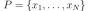 is defined, using Niederreiter’s notation, as:
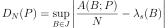
where 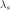 is the s-dimensional Lebesgue measure, 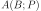 is the number of points in
 that fall into 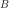, and 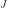 is
the set of s-dimensional intervals or boxes of the form:
that fall into 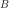, and 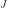 is
the set of s-dimensional intervals or boxes of the form: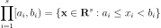
where 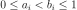.
The star-discrepancy 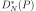 is defined similarly, except that the supremum is taken over the set 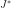 of intervals of the form:
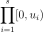
where 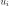 is in the half-open interval 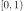.
A low-discrepancy sequence can be generated only through the derived classes of LowDiscrepancySequence. The sequences implemented are
Faure,Halton,Reverse Halton,HaselgroveandSobolsequences.Examples
>>> import openturns as ot >>> # Create a sequence of 3 points of 2 dimensions >>> sequence = ot.LowDiscrepancySequence(ot.SobolSequence(2)) >>> print(sequence.generate(3)) 0 : [ 0.5 0.5 ] 1 : [ 0.75 0.25 ] 2 : [ 0.25 0.75 ]
Methods
computeStarDiscrepancy(sample)Compute the star discrepancy of a sample uniformly distributed over [0, 1).
generate(*args)Generate a sample of pseudo-random vectors of numbers uniformly distributed over [0, 1).
Accessor to the object's name.
Accessor to the dimension of the points of the low discrepancy sequence.
getId()Accessor to the object's id.
Accessor to the underlying implementation.
getName()Accessor to the object's name.
initialize(dimension)Initialize the sequence.
setName(name)Accessor to the object's name.
- __init__(*args)¶
- computeStarDiscrepancy(sample)¶
Compute the star discrepancy of a sample uniformly distributed over [0, 1).
- Parameters
- sample2-d sequence of float
- Returns
- starDiscrepancyfloat
Star discrepancy of a sample uniformly distributed over [0, 1).
Examples
>>> import openturns as ot >>> # Create a sequence of 3 points of 2 dimensions >>> sequence = ot.LowDiscrepancySequence(ot.SobolSequence(2)) >>> sample = sequence.generate(16) >>> print(sequence.computeStarDiscrepancy(sample)) 0.12890625 >>> sample = sequence.generate(64) >>> print(sequence.computeStarDiscrepancy(sample)) 0.0537109375
- generate(*args)¶
Generate a sample of pseudo-random vectors of numbers uniformly distributed over [0, 1).
- Parameters
- sizeint
Number of points to be generated. Default is 1.
- Returns
- sample
Sample Sample of pseudo-random vectors of numbers uniformly distributed over [0, 1).
- sample
Examples
>>> import openturns as ot >>> # Create a sequence of 3 points of 2 dimensions >>> sequence = ot.LowDiscrepancySequence(ot.SobolSequence(2)) >>> print(sequence.generate(3)) 0 : [ 0.5 0.5 ] 1 : [ 0.75 0.25 ] 2 : [ 0.25 0.75 ]
- getClassName()¶
Accessor to the object’s name.
- Returns
- class_namestr
The object class name (object.__class__.__name__).
- getDimension()¶
Accessor to the dimension of the points of the low discrepancy sequence.
- Returns
- dimensionint
Dimension of the points of the low discrepancy sequence.
- getId()¶
Accessor to the object’s id.
- Returns
- idint
Internal unique identifier.
- getImplementation()¶
Accessor to the underlying implementation.
- Returns
- implImplementation
The implementation class.
- getName()¶
Accessor to the object’s name.
- Returns
- namestr
The name of the object.
- initialize(dimension)¶
Initialize the sequence.
- Parameters
- dimensionint
Dimension of the points of the low discrepancy sequence.
Examples
>>> import openturns as ot >>> # Create a sequence of 3 points of 2 dimensions >>> sequence = ot.LowDiscrepancySequence(ot.SobolSequence(2)) >>> print(sequence.generate(3)) 0 : [ 0.5 0.5 ] 1 : [ 0.75 0.25 ] 2 : [ 0.25 0.75 ] >>> print(sequence.generate(3)) 0 : [ 0.375 0.375 ] 1 : [ 0.875 0.875 ] 2 : [ 0.625 0.125 ] >>> sequence.initialize(2) >>> print(sequence.generate(3)) 0 : [ 0.5 0.5 ] 1 : [ 0.75 0.25 ] 2 : [ 0.25 0.75 ]
- setName(name)¶
Accessor to the object’s name.
- Parameters
- namestr
The name of the object.